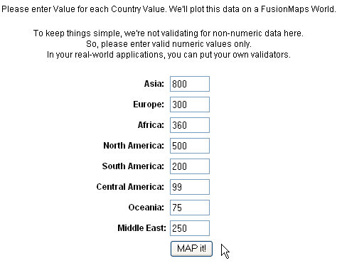
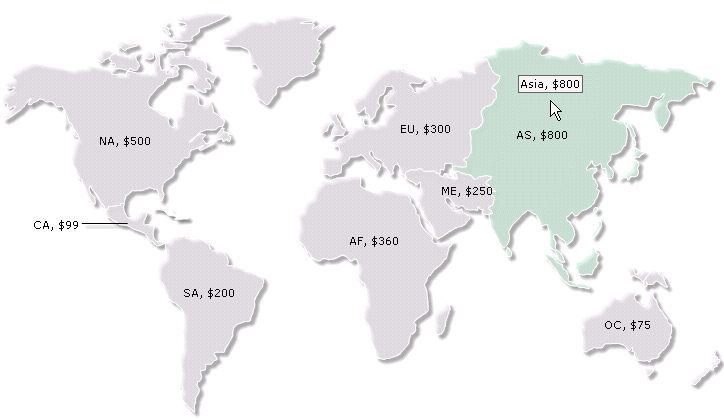

| Using data from Form |
|
In this section we will see how to generate a map using FusionMaps XT based on data collected in a Form. For the sake of demo, let us take the example of a fictional company that wants to plot the world-wide sales report for a particular day on a map. The example first loads a page that has a form to accept data for all the continents. Here, we have put some default data which can be modified as per user's wish. This data will be submitted to another PHP page. This page will acquire the data and plot it on the map. For the sake of simplicity, we will not do any processing or checking on this data. However, your real life applications might process data before presenting it on the map. |
| Before proceeding further, we recommend to go through the documentation How FusionMaps XT works? for a better insight. |
| The code examples contained in this page are present in Download Package > Code > PHP > FormBased folder. |
| Building the Form |
|
The form is contained in the Default.php page, as shown below: |
|  |
| This is a very simple form which Submits to FormSubmit.php. |
| Requesting the data and Creating the Map |
|
The work of requesting the data from submitted form and creating the map is done in FormSubmit.php, present in the same folder. It contains the following code: |
<?php |
| Steps involved in this code |
|
Below is the snapshot of the map that we get here.  |